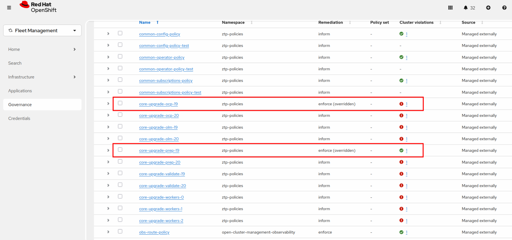
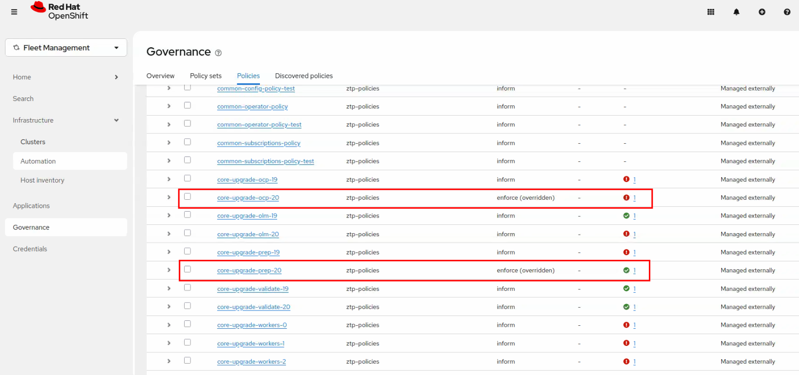
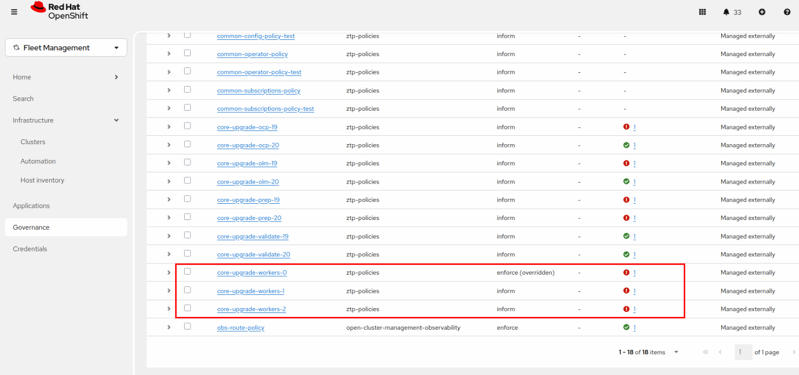
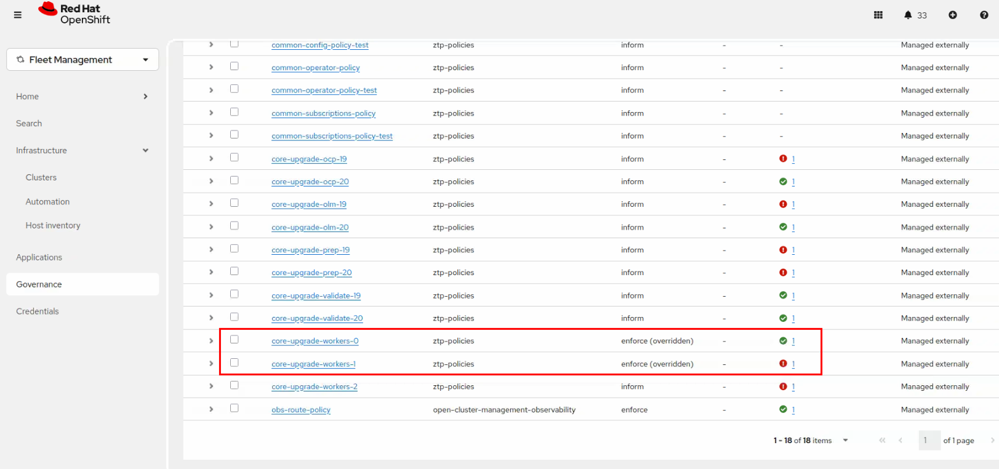

Fast MNO Upgrade — Execution
Executing the Full EUS-to-EUS Upgrade
With all policies created and bound on the Hub cluster, we are ready to orchestrate the entire, multi-stage upgrade. This is accomplished by defining and applying a series of ClusterGroupUpgrade (CGU) resources.
The core strategy is to chain the CGUs together using the blockingCRs (Blocking Custom Resources) directive. This allows us to apply all the CGUs at once, and TALM will automatically execute each major stage in the correct sequence, waiting for the previous one to complete before starting the next.
Defining the CGU Orchestration Chain
We will create four CGU files to manage the entire upgrade flow from 4.18 to 4.20.
The key mechanism is the blockingCRs field: a CGU will remain in a waiting state until all CGUs listed in its blockingCRs have completed successfully. By applying all three CGUs simultaneously, TALM automatically manages the sequencing — you do not need to watch and manually trigger each stage.
The actions.afterCompletion block in each CGU controls cluster labeling: it removes the labels that activated the current stage and adds the labels needed for the next stage, ensuring the correct policies are activated at the right time.
CGU: fast-upgrade-19
This is the first CGU in the main upgrade chain. It orchestrates the prep, ocp, olm, and validate policies required to get the control plane from 4.18 to 4.19.
Create fast-upgrade-19.yaml:
cat <<EOF | oc --kubeconfig ~/hub-kubeconfig apply -f -
apiVersion: ran.openshift.io/v1alpha1
kind: ClusterGroupUpgrade
metadata:
name: fast-upgrade-19
namespace: ztp-policies
spec:
actions:
afterCompletion:
deleteObjects: true
addClusterLabels:
upgrading-to-419: ""
common: "ocp419"
clusters:
- mno
enable: true
managedPolicies:
- core-upgrade-prep-19
- core-upgrade-ocp-19
- core-upgrade-olm-19
- core-upgrade-validate-19
remediationStrategy:
maxConcurrency: 1
timeout: 480
EOFCGU: fast-upgrade-20
This CGU manages the upgrade from 4.19 to 4.20. It is blocked by fast-upgrade-19 CGU and, when it completes, it automatically:
-
Removes the
upgrading-to-419label. -
Adds
common=ocp420andupgrading-to-420label. -
Cleans up the objects created by the
fast-upgrade-19CGU.
Create fast-upgrade-20.yaml:
cat <<EOF | oc --kubeconfig ~/hub-kubeconfig apply -f -
apiVersion: ran.openshift.io/v1alpha1
kind: ClusterGroupUpgrade
metadata:
name: fast-upgrade-20
namespace: ztp-policies
spec:
actions:
afterCompletion:
deleteClusterLabels:
upgrading-to-419: ""
addClusterLabels:
upgrading-to-420: ""
deleteObjects: true
clusters:
- mno
enable: true
managedPolicies:
- core-upgrade-prep-20
- core-upgrade-ocp-20
- core-upgrade-olm-20
- core-upgrade-validate-20
remediationStrategy:
maxConcurrency: 1
timeout: 480
blockingCRs:
- name: fast-upgrade-19
namespace: ztp-policies
EOFCGU: fast-upgrade-workers
This is the final CGU in the chain. It manages the upgrade of the 3 worker zones. It is blocked by fast-upgrade-20 and, when it completes, it automatically:
-
Adds
version=4.20label. -
Cleans up the objects created by the
fast-upgrade-20CGU.
Create fast-upgrade-finish.yaml:
cat <<EOF | oc --kubeconfig ~/hub-kubeconfig apply -f -
---
apiVersion: ran.openshift.io/v1alpha1
kind: ClusterGroupUpgrade
metadata:
name: fast-upgrade-finish
namespace: ztp-policies
spec:
actions:
afterCompletion:
addClusterLabels:
common: "ocp420"
deleteClusterLabels:
upgrading-to-420: ""
upgrade-fast-418-420: ""
deleteObjects: true
clusters:
- mno
enable: true
managedPolicies:
# These policies unpause the MCP
- core-upgrade-workers-0
- core-upgrade-workers-1
- core-upgrade-workers-2
remediationStrategy:
maxConcurrency: 1
timeout: 480
blockingCRs:
- name: fast-upgrade-20
namespace: ztp-policies
EOFTriggering the Upgrade
After applying all three CGUs to the Hub cluster, TALM will automatically determine the correct execution order based on the blockingCRs dependencies and start the upgrade process.
You can check the status of all three CGUs:
oc --kubeconfig ~/hub-kubeconfig get cgu -n ztp-policiesNAME AGE STATE DETAILS
fast-upgrade-19 43s InProgress Remediating non-compliant policies
fast-upgrade-20 38s IncompleteBlockingCR Blocking CRs that are not completed: [fast-upgrade-19]
fast-upgrade-finish 3s IncompleteBlockingCR Blocking CRs that are not completed: [fast-upgrade-20]
The IncompleteBlockingCR state for fast-upgrade-20 and fast-upgrade-finish is expected and not an error. The fast-upgrade-20 CGU is blocked by fast-upgrade-19 CGU and the fast-upgrade-finish CGU is blocked by fast-upgrade-20 CGU.
|
The upgrade is now fully automated. TALM will execute each stage in sequence without any further manual intervention.
Monitoring Stage 1 — 4.18 → 4.19 Control Plane
During this stage, the control plane is upgraded from 4.18 to 4.19. All worker MCPs remain paused throughout. We can see from the RHACM console that the policies related to the upgrade to 4.19 are being remediated one by one. See the progress in the image below:

On the mno spoke cluster, observe the ClusterVersion progressing:
oc --kubeconfig ~/mno-kubeconfig get clusterversionNAME VERSION AVAILABLE PROGRESSING SINCE STATUS
version 4.18.33 True True 2m Working towards 4.19.24: 113 of 924 done (12% complete)After a while, you will see that the master nodes are being upgraded one at a time by the MCO. See the progress by running the following command:
oc --kubeconfig ~/mno-kubeconfig get nodesNAME STATUS ROLES VERSION
control-plane-0 Ready control-plane,master v1.31.14
control-plane-1 Ready control-plane,master v1.31.14
control-plane-2 NotReady,SchedulingDisabled control-plane,master v1.31.14
worker-00 Ready worker,worker-0 v1.31.14
worker-01 Ready worker,worker-0 v1.31.14
worker-02 Ready worker,worker-0 v1.31.14
worker-10 Ready worker,worker-1 v1.31.14
worker-11 Ready worker,worker-1 v1.31.14
worker-12 Ready worker,worker-1 v1.31.14
worker-20 Ready worker,worker-2 v1.31.14
worker-21 Ready worker,worker-2 v1.31.14
worker-22 Ready worker,worker-2 v1.31.14
Only one master node at a time is NotReady,SchedulingDisabled. The MCO upgrades control plane nodes one by one to maintain etcd quorum. All worker nodes remain untouched at this stage.
|
When this stage finishes, verify the split-version state — masters at 4.19, workers still at 4.18:
oc --kubeconfig ~/mno-kubeconfig get clusterversion,nodesNAME VERSION AVAILABLE PROGRESSING STATUS
clusterversion.config.openshift.io/version 4.19.24 True False Cluster version is 4.19.24
NAME STATUS ROLES VERSION
control-plane-0 Ready control-plane,master v1.32.10
control-plane-1 Ready control-plane,master v1.32.10
control-plane-2 Ready control-plane,master v1.32.10
worker-00 Ready worker,worker-0 v1.31.14
worker-01 Ready worker,worker-0 v1.31.14
worker-02 Ready worker,worker-0 v1.31.14
worker-10 Ready worker,worker-1 v1.31.14
worker-11 Ready worker,worker-1 v1.31.14
worker-12 Ready worker,worker-1 v1.31.14
worker-20 Ready worker,worker-2 v1.31.14
worker-21 Ready worker,worker-2 v1.31.14
worker-22 Ready worker,worker-2 v1.31.14This split-version state (masters at 4.19, workers at 4.18) is fully supported by the Kubernetes version skew policy and will persist until the worker upgrade phase begins.
Monitoring Stage 2 — 4.19 → 4.20 Control Plane
As soon as fast-upgrade-19 completes, TALM automatically moves fast-upgrade-20 to InProgress. We can see from the RHACM console that the policies related to the upgrade to 4.20 are being remediated one by one. See the progress in the image below:

Check the CGU chain status:
oc --kubeconfig ~/hub-kubeconfig get cgu -n ztp-policiesNAME AGE STATE DETAILS
fast-upgrade-19 129m Completed All clusters are compliant with all the managed policies
fast-upgrade-20 129m InProgress Remediating non-compliant policies
fast-upgrade-finish 129m IncompleteBlockingCR Blocking CRs that are not completed: [fast-upgrade-20]On the mno cluster, observe the second control plane upgrade in progress:
oc --kubeconfig ~/mno-kubeconfig get clusterversionNAME VERSION AVAILABLE PROGRESSING STATUS
version 4.19.24 True True Working towards 4.20.8: 119 of 957 done (12% complete)Confirm that all worker MCPs remain paused and not updating:
oc --kubeconfig ~/mno-kubeconfig get mcpNAME UPDATED UPDATING DEGRADED MACHINECOUNT READYMACHINECOUNT UPDATEDMACHINECOUNT
master False True False 3 1 1
worker True False False 0 0 0
worker-0 False False False 3 0 0
worker-1 False False False 3 0 0
worker-2 False False False 3 0 0When this stage completes, the entire control plane is at 4.20 while all worker nodes remain on 4.18:
oc --kubeconfig ~/mno-kubeconfig get clusterversion,nodesNAME VERSION AVAILABLE PROGRESSING STATUS
clusterversion.config.openshift.io/version 4.20.8 True False Cluster version is 4.20.8
NAME STATUS ROLES VERSION
control-plane-0 Ready control-plane,master v1.33.6
control-plane-1 Ready control-plane,master v1.33.6
control-plane-2 Ready control-plane,master v1.33.6
worker-00 Ready worker,worker-0 v1.31.14
worker-01 Ready worker,worker-0 v1.31.14
worker-02 Ready worker,worker-0 v1.31.14
worker-10 Ready worker,worker-1 v1.31.14
worker-11 Ready worker,worker-1 v1.31.14
worker-12 Ready worker,worker-1 v1.31.14
worker-20 Ready worker,worker-2 v1.31.14
worker-21 Ready worker,worker-2 v1.31.14
worker-22 Ready worker,worker-2 v1.31.14Monitoring Stage 3 — Worker Zone Upgrades
With fast-upgrade-20 completed, TALM automatically unblocks fast-upgrade-finish and begins the sequential, parallel upgrade of the 3 worker zones.
We can see from the RHACM console that the policies related to the upgrade of the worker zones are being remediated one by one. See the progress in the image below:

Confirm fast-upgrade-finish is now InProgress:
oc --kubeconfig ~/hub-kubeconfig get cgu -n ztp-policiesNAME AGE STATE DETAILS
fast-upgrade-19 154m Completed All clusters are compliant with all the managed policies
fast-upgrade-20 154m Completed All clusters are compliant with all the managed policies
fast-upgrade-finish 154m InProgress Remediating non-compliant policiesTALM first enforces core-upgrade-workers-0, which sets paused: false on the worker-0 MCP. All 3 nodes in zone 0 drain and reboot in parallel simultaneously. Observe the parallel drain:
oc --kubeconfig ~/mno-kubeconfig get nodesNAME STATUS ROLES VERSION
control-plane-0 Ready control-plane,master v1.33.6
control-plane-1 Ready control-plane,master v1.33.6
control-plane-2 Ready control-plane,master v1.33.6
worker-00 Ready,SchedulingDisabled worker,worker-0 v1.31.14
worker-01 Ready,SchedulingDisabled worker,worker-0 v1.31.14
worker-02 Ready,SchedulingDisabled worker,worker-0 v1.31.14
worker-10 Ready worker,worker-1 v1.31.14
worker-11 Ready worker,worker-1 v1.31.14
worker-12 Ready worker,worker-1 v1.31.14
worker-20 Ready worker,worker-2 v1.31.14
worker-21 Ready worker,worker-2 v1.31.14
worker-22 Ready worker,worker-2 v1.31.14All three nodes of zone 0 are draining simultaneously — this is the key difference from a standard serial upgrade. Check the MCP state:
oc --kubeconfig ~/mno-kubeconfig get mcpNAME UPDATED UPDATING DEGRADED MACHINECOUNT READYMACHINECOUNT UPDATEDMACHINECOUNT
master True False False 3 3 3
worker True False False 0 0 0
worker-0 False True False 3 0 0
worker-1 False False False 3 0 0
worker-2 False False False 3 0 0
The pods that were running on zone 0 are rescheduled onto zones 1 and 2. Because the workload was sized to respect the spare capacity rule (~66% maximum load with 3 zones), all pods can be accommodated on the remaining 6 nodes. Pods that cannot reschedule due to capacity or scheduling constraints will remain in Pending state and will recover once zone 0 nodes come back up — the upgrade continues regardless.
|
Once worker-0 MCP reports Updated: True, TALM marks core-upgrade-workers-0 as compliant and immediately enforces core-upgrade-workers-1, then core-upgrade-workers-2. This sequential pattern repeats until all three zones are upgraded.

oc --kubeconfig ~/mno-kubeconfig get nodesNAME STATUS ROLES VERSION
control-plane-0 Ready control-plane,master v1.33.6
control-plane-1 Ready control-plane,master v1.33.6
control-plane-2 Ready control-plane,master v1.33.6
worker-00 Ready worker,worker-0 v1.33.6
worker-01 Ready worker,worker-0 v1.33.6
worker-02 Ready worker,worker-0 v1.33.6
worker-10 Ready,SchedulingDisabled worker,worker-1 v1.31.14
worker-11 Ready,SchedulingDisabled worker,worker-1 v1.31.14
worker-12 Ready,SchedulingDisabled worker,worker-1 v1.31.14
worker-20 Ready worker,worker-2 v1.31.14
worker-21 Ready worker,worker-2 v1.31.14
worker-22 Ready worker,worker-2 v1.31.14Monitoring Stage 4 — Upgrade Complete
When upgrade-finish completes, all three CGUs report Completed:
oc --kubeconfig ~/hub-kubeconfig get cgu -n ztp-policiesNAME AGE STATE DETAILS
fast-upgrade-19 171m Completed All clusters are compliant with all the managed policies
fast-upgrade-20 171m Completed All clusters are compliant with all the managed policies
fast-upgrade-finish 170m Completed All clusters are compliant with all the managed policiesVerify that all nodes — both masters and workers — are now running the final target version:
oc --kubeconfig ~/mno-kubeconfig get nodesNAME STATUS ROLES AGE VERSION
control-plane-0 Ready control-plane,master 6d v1.33.6
control-plane-1 Ready control-plane,master 6d v1.33.6
control-plane-2 Ready control-plane,master 6d v1.33.6
worker-00 Ready worker,worker-0 6d v1.33.6
worker-01 Ready worker,worker-0 6d v1.33.6
worker-02 Ready worker,worker-0 6d v1.33.6
worker-10 Ready worker,worker-1 6d v1.33.6
worker-11 Ready worker,worker-1 6d v1.33.6
worker-12 Ready worker,worker-1 6d v1.33.6
worker-20 Ready worker,worker-2 6d v1.33.6
worker-21 Ready worker,worker-2 6d v1.33.6
worker-22 Ready worker,worker-2 6d v1.33.6Confirm the final cluster version:
oc --kubeconfig ~/mno-kubeconfig get clusterversionNAME VERSION AVAILABLE PROGRESSING SINCE STATUS
version 4.20.8 True False 5m Cluster version is 4.20.8Also confirm the operators running on the cluster are aligned with the target version 4.20:
oc --kubeconfig ~/mno-kubeconfig get subscriptions -A -o custom-columns="NAMESPACE:.metadata.namespace,PACKAGE:.spec.name,CHANNEL:.spec.channel"NAMESPACE PACKAGE CHANNEL
metallb-system metallb-operator stable
openshift-logging cluster-logging stable-6.4
openshift-nmstate kubernetes-nmstate-operator stable
openshift-numaresources numaresources-operator 4.20
openshift-sriov-network-operator sriov-network-operator stable
openshift-storage cephcsi-operator stable-4.20
openshift-storage mcg-operator stable-4.20
openshift-storage ocs-client-operator stable-4.20
openshift-storage ocs-operator stable-4.20
openshift-storage odf-csi-addons-operator stable-4.20
openshift-storage odf-dependencies stable-4.20
openshift-storage odf-external-snapshotter-operator stable-4.20
openshift-storage odf-operator stable-4.20
openshift-storage odf-prometheus-operator stable-4.20
openshift-storage recipe stable-4.20
openshift-storage rook-ceph-operator stable-4.20The EUS-to-EUS upgrade from 4.18 to 4.20 is complete. Each of the 9 worker nodes rebooted exactly once, the three worker zones were upgraded sequentially in parallel, and the entire process was executed without any manual intervention after the initial CGU application.
For a full explanation of why this approach is significantly faster than a standard serial upgrade, refer back to the Key Benefits section.